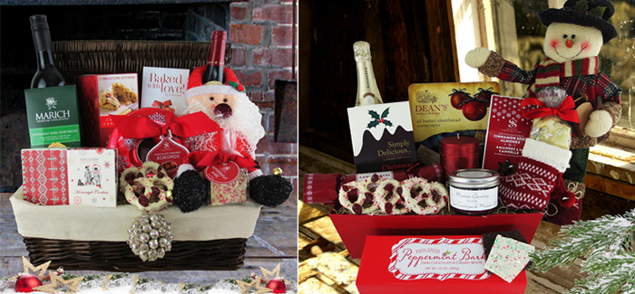
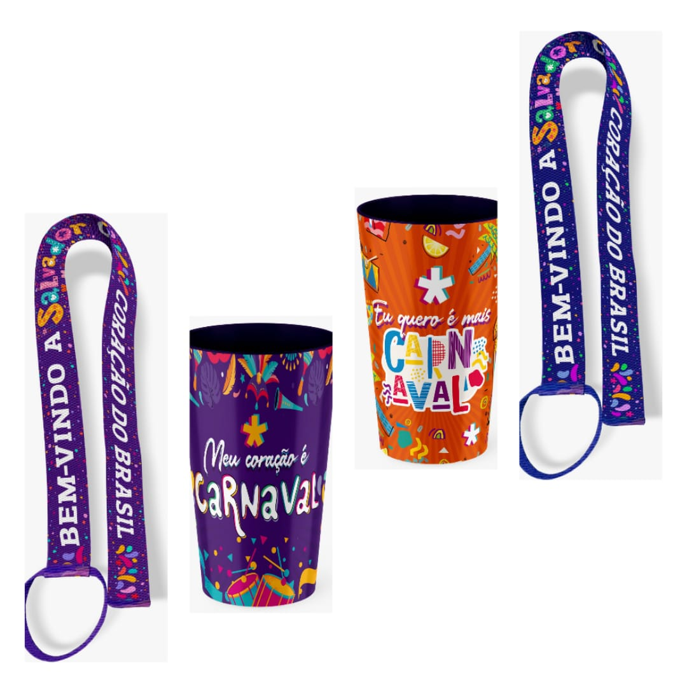

Época e contexto
Natal
Prepare agradecimentos e encontros de fim de ano, relacionando destinatário, utilidade, mensagem e apresentação, sem presumir uma celebração igual para todos.
Explorar NatalUma época ajuda a formular perguntas: quem participa, onde será usado o artigo e como chega à pessoa certa? Explore contextos, tradições documentadas e critérios de escolha, sem tratar uma oferta como regra da celebração.

Prepare agradecimentos e encontros de fim de ano, relacionando destinatário, utilidade, mensagem e apresentação, sem presumir uma celebração igual para todos.
Explorar NatalPense nas deslocações, no frio, na chuva e no contraste entre espaços interiores e exteriores. A estação orienta perguntas, sem garantir propriedades dos artigos.
Explorar Inverno
Relacione tradições locais, desfiles e participação com identificação, materiais de apoio e recordações, distinguindo-os de máscaras, fantasias e equipamentos.
Explorar CarnavalPrepare artigos para turismo, viagens, praia, festivais e atividades ao ar livre, pensando no percurso completo e nas condições documentadas de utilização.
Explorar VerãoEsta secção trata épocas e celebrações. Os públicos e setores continuam em Para quem; as características dos artigos encontram-se em Produtos.